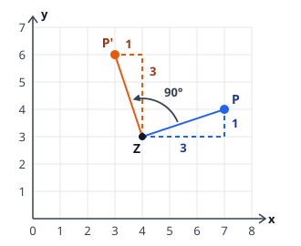

Spiegeln und Drehen
Mit einem KI-Tutor lernen
Ein KI-Tutor erklärt dir diese Seite und hilft dir bei den Aufgaben. Wähl deinen Assistenten:
Mit Claude öffnen Mit ChatGPT öffnen Mit Mistral Vibe öffnen
Du nutzt dein eigenes Konto beim Anbieter. Der Assistent ist kein Angebot von lernapps.net: lernapps liefert nur Inhalte und Aufgaben. Die Wahl gilt für alle Seiten, nur auf diesem Gerät.
Ziel: Ich kann Figuren an einer Achse spiegeln und um einen Punkt drehen. Auf der vorigen Seite hast du Symmetrien geprüft. Jetzt erzeugst du das Bild einer Figur selbst – im Koordinatensystem, mit Zahlen.
Probier zuerst
Aufgabe
Lösung
Richtige Antwort: 7
P liegt 3 links von der Achse, P' genauso weit rechts: x = 4 + 3 = 7.
Spiegeln und drehen im Gitter
So wie in der Aufgabe spiegelst du jeden Punkt: Geh von P aus senkrecht zur Achse, also im rechten Winkel. Miss den Abstand und trag ihn auf der anderen Seite noch einmal ab. Eine Figur spiegelst du Ecke für Ecke.

C liegt 2 Kästchen links von g, C' 2 rechts davon. Jede Verbindungslinie trifft g im rechten Winkel.
Quelle: eigene Zeichnung. Lizenz: CC-BY-4.0.Im Heft legst du die Mittellinie des Geodreiecks auf die Achse und die lange Kante durch P.
Beim Drehen um einen Drehpunkt Z bleibt jeder Punkt gleich weit von Z entfernt. Der Winkel sagt, wie weit gedreht wird. In der Mathematik dreht man gegen den Uhrzeigersinn, wenn nichts anderes dasteht. Im Gitter zählst du den Weg von Z zum Punkt und drehst diesen Weg mit.

Der ganze Weg von Z aus dreht sich mit – aus „rechts“ wird „oben“, aus „oben“ wird „links“.
Quelle: eigene Zeichnung. Lizenz: CC-BY-4.0.| Drehung | Weg von Z aus | Punkt |
|---|---|---|
| 0° | 3 rechts, 1 hoch | (7 | 4) |
| 90° | 3 hoch, 1 links | (3 | 6) |
| 180° | 3 links, 1 runter | (1 | 2) |
Die Drehung um 180° ist die halbe Drehung von der vorigen Seite. Bei ihr ist die Richtung egal.
Ein Beispiel
Eine waagerechte Achse und ein Punkt auf der Achse
Das Dreieck mit A(1 | 1), B(5 | 2) und C(3 | 4) wird an der waagerechten Geraden y = 4 gespiegelt. Jetzt bleibt die x-Koordinate, und die y-Koordinate ändert sich.
- A liegt 3 Kästchen unter der Achse, A' 3 darüber: y = 4 + 3 = 7.
- B liegt 2 Kästchen unter der Achse, B' 2 darüber: y = 4 + 2 = 6.
- C liegt auf der Achse. Sein Abstand ist 0, also bleibt C, wo er ist.
Antwort – A'(1 | 7), B'(5 | 6) und C' = C(3 | 4).
Senkrecht messen, Richtung lesen
Merke
Miss den Abstand immer senkrecht zur Achse. Bei einer schrägen Achse heißt das: schräg durchs Gitter, nicht waagerecht. Und lies beim Drehen genau, in welche Richtung gedreht wird: Bei 90° gegen den Uhrzeigersinn landet der Punkt woanders als bei 90° mit dem Uhrzeigersinn.
Jetzt du
Aufgabe
Lösung
Punkt 1
Punkt 1 liegt auf der Achse, nicht auf ihrer anderen Seite.
Punkt 2 richtige Antwort
Von P geht es im rechten Winkel zur Achse bis (2,5 | 2,5) und noch einmal so weit: zu Punkt 2.
Punkt 3
Zu Punkt 3 kommst du, wenn du waagerecht misst – nicht im rechten Winkel zu g.
Nur die Verbindung von P zu Punkt 2 trifft g im rechten Winkel und wird von g halbiert.
Aufgabe
Drei Beispielaufgaben, jede mit ihrer Lösung:
Aufgabe Nr. 1
Der Punkt P(2 | 7) wird an der senkrechten Geraden x = 5 gespiegelt. Welche x-Koordinate hat der Bildpunkt P'?
Tipp
Wie viele Kästchen liegt P links von der Achse?
Lösung
- Die Achse liegt bei x = 5. P liegt 5 − 2 Kästchen links davon.
- P' liegt genauso weit rechts: 5 + (5 − 2) = 8. Die y-Koordinate 7 bleibt.
Richtige Antwort: 8
Aufgabe Nr. 2
Der Punkt P(3 | 5) wird an der senkrechten Geraden x = 4 gespiegelt. Welche x-Koordinate hat der Bildpunkt P'?
Tipp
Wie viele Kästchen liegt P links von der Achse?
Lösung
- Die Achse liegt bei x = 4. P liegt 4 − 3 Kästchen links davon.
- P' liegt genauso weit rechts: 4 + (4 − 3) = 5. Die y-Koordinate 5 bleibt.
Richtige Antwort: 5
Aufgabe Nr. 3
Der Punkt P(0 | 1) wird an der senkrechten Geraden x = 5 gespiegelt. Welche x-Koordinate hat der Bildpunkt P'?
Tipp
Wie viele Kästchen liegt P links von der Achse?
Lösung
- Die Achse liegt bei x = 5. P liegt 5 − 0 Kästchen links davon.
- P' liegt genauso weit rechts: 5 + (5 − 0) = 10. Die y-Koordinate 1 bleibt.
Richtige Antwort: 10
Aufgabe
Drei Beispielaufgaben, jede mit ihrer Lösung:
Aufgabe Nr. 1
Der Punkt P(0 | 6) wird um den Drehpunkt Z(4 | 3) um 180° gedreht. Welche x-Koordinate hat der Bildpunkt P'?
Tipp
Bei 180° wird aus „links von Z“ „rechts von Z“.
Lösung
- P liegt 4 − 0 Kästchen links von Z.
- P' liegt genauso weit rechts von Z: 4 + (4 − 0) = 8.
Richtige Antwort: 8
Aufgabe Nr. 2
Der Punkt P(0 | 0) wird um den Drehpunkt Z(5 | 5) um 180° gedreht. Welche x-Koordinate hat der Bildpunkt P'?
Tipp
Bei 180° wird aus „links von Z“ „rechts von Z“.
Lösung
- P liegt 5 − 0 Kästchen links von Z.
- P' liegt genauso weit rechts von Z: 5 + (5 − 0) = 10.
Richtige Antwort: 10
Aufgabe Nr. 3
Der Punkt P(1 | 5) wird um den Drehpunkt Z(7 | 6) um 180° gedreht. Welche x-Koordinate hat der Bildpunkt P'?
Tipp
Bei 180° wird aus „links von Z“ „rechts von Z“.
Lösung
- P liegt 7 − 1 Kästchen links von Z.
- P' liegt genauso weit rechts von Z: 7 + (7 − 1) = 13.
Richtige Antwort: 13
Aufgabe
Drei Beispielaufgaben, jede mit ihrer Lösung:
Aufgabe Nr. 1
Der Punkt P(10 | 6) wird um den Drehpunkt Z(7 | 5) um 90° gegen den Uhrzeigersinn gedreht. Welche x-Koordinate hat der Bildpunkt P'?
Tipp
Schreib den Weg von Z zu P auf und dreh ihn mit.
Lösung
- Von Z nach P: 10 − 7 nach rechts und 6 − 5 nach oben.
- Nach 90° gegen den Uhrzeigersinn wird aus „nach oben“ „nach links“.
- P' liegt also 6 − 5 links von Z: x = 7 − (6 − 5) = 6.
Richtige Antwort: 6
Aufgabe Nr. 2
Der Punkt P(10 | 5) wird um den Drehpunkt Z(6 | 4) um 90° gegen den Uhrzeigersinn gedreht. Welche x-Koordinate hat der Bildpunkt P'?
Tipp
Schreib den Weg von Z zu P auf und dreh ihn mit.
Lösung
- Von Z nach P: 10 − 6 nach rechts und 5 − 4 nach oben.
- Nach 90° gegen den Uhrzeigersinn wird aus „nach oben“ „nach links“.
- P' liegt also 5 − 4 links von Z: x = 6 − (5 − 4) = 5.
Richtige Antwort: 5
Aufgabe Nr. 3
Der Punkt P(5 | 5) wird um den Drehpunkt Z(4 | 2) um 90° gegen den Uhrzeigersinn gedreht. Welche x-Koordinate hat der Bildpunkt P'?
Tipp
Schreib den Weg von Z zu P auf und dreh ihn mit.
Lösung
- Von Z nach P: 5 − 4 nach rechts und 5 − 2 nach oben.
- Nach 90° gegen den Uhrzeigersinn wird aus „nach oben“ „nach links“.
- P' liegt also 5 − 2 links von Z: x = 4 − (5 − 2) = 1.
Richtige Antwort: 1
Aufgabe
Lösung
Richtige Antwort: 9
P'(5 | 2), dann P''(9 | 2). P wandert um 8 – doppelt so weit, wie die Achsen auseinanderliegen.
Aufgabe
Lösung
Richtige Antwort: Die Aussage stimmt.
Beide halben Drehungen enden an derselben Stelle. Bei 90° ist das anders.
Im nächsten Kapitel geht es um die Wahlaufgabe W2: Dreieckskonstruktionen und Kongruenzsätze.
Fehler gefunden oder eine Idee für diese App?